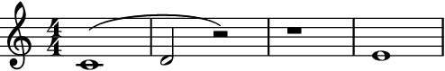
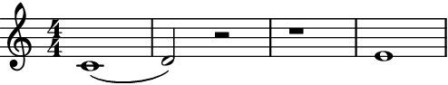
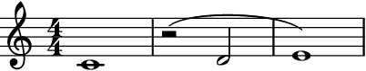
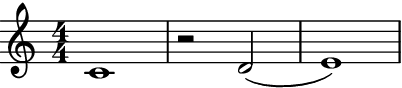
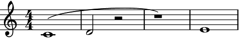
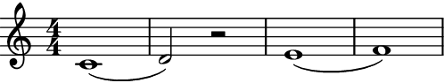
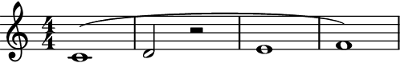

auxjad.reposition_slurs¶
-
auxjad.reposition_slurs(container: abjad.core.Container.Container, *, allow_slurs_under_rests: bool = False, remove_unterminated_slurs: bool = True)¶ Mutates an input container (of type
abjad.Containeror child class) in place and has no return value; this function repositions all slurs that starts or ends on rests.- Basic usage:
This function will shift slurs that ends on rests to the previous pitched leaf.
>>> staff = abjad.Staff(r"c'1( d'2 r2) r1 e'1") >>> abjad.f(staff) \new Staff { c'1 ( d'2 r2 ) r1 e'1 }
>>> staff = abjad.Staff(r"c'1( d'2 r2) r1 e'1") >>> auxjad.reposition_slurs(staff) >>> abjad.f(staff) \new Staff { c'1 ( d'2 ) r2 r1 e'1 }
- Rests:
Slurs starting on rests are shifted to the next pitched leaf.
>>> staff = abjad.Staff(r"c'1 r2( d'2 e'1)") >>> abjad.f(staff) \new Staff { c'1 r2 ( d'2 e'1 ) }
>>> staff = abjad.Staff(r"c'1 r2( d'2 e'1)") >>> auxjad.reposition_slurs(staff) >>> abjad.f(staff) \new Staff { c'1 r2 d'2 ( e'1 ) }
- Multiple rests:
This function also works when multiple rests are present.
>>> staff = abjad.Staff(r"c'1( d'2 r2 r1) e'1") >>> abjad.f(staff) \new Staff { c'1 ( d'2 r2 r1 ) e'1 }
>>> staff = abjad.Staff(r"c'1( d'2 r2 r1) e'1") >>> auxjad.reposition_slurs(staff) >>> abjad.f(staff) \new Staff { c'1 ( d'2 ) r2 r1 e'1 }

allow_slurs_under_rests:By default, a slur crossing a rest is broken into two.
>>> staff = abjad.Staff(r"c'1( d'2 r2 e'1 f'1)") >>> auxjad.reposition_slurs(staff) >>> abjad.f(staff) \new Staff { c'1 ( d'2 ) r2 e'1 ( f'1 ) }
Set the optional keyword argument
allow_slurs_under_reststoTrueto allow slurs under rests.>>> staff = abjad.Staff(r"c'1( d'2 r2 e'1 f'1)") >>> auxjad.reposition_slurs(staff, allow_slurs_under_rests=True) >>> abjad.f(staff) \new Staff { c'1 ( d'2 r2 e'1 f'1 ) }
remove_unterminated_slurs:By default, unterminated slurs are removed.
>>> staff = abjad.Staff(r"c'1( d'2 r2 e'2 f'2) g'1(") >>> auxjad.reposition_slurs(staff) >>> abjad.f(staff) \new Staff { c'1 ( d'2 ) r2 e'2 ( f'2 ) g'1 }

Set the optional keyword argument
remove_unterminated_slurstoTrueto disable this behaviour.>>> staff = abjad.Staff(r"c'1( d'2 r2 e'2 f'2) g'1(") >>> auxjad.reposition_slurs(staff, remove_unterminated_slurs=False) >>> abjad.f(staff) \new Staff { c'1 ( d'2 ) r2 e'2 ( f'2 ) g'1 ( }

Warning
The input container must be a contiguous logical voice. When dealing with a container with multiple subcontainers (e.g. a score containings multiple staves), the best approach is to cycle through these subcontainers, applying this function to them individually.